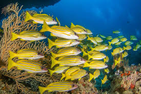
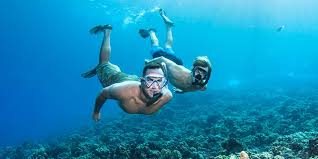

Sport2: SNORKELING
Snorkeling: Snorkeling in Lakshadweep offers a glimpse into a vibrant underwater paradise.
With minimal equipment required, snorkelers can easily explore the shallow reefs and lagoons surrounding islands like Minicoy and Kalpeni.
The coral gardens teem with life, showcasing a kaleidoscope of colors as schools of fish dart amongst the intricate formations.
Snorkelers might encounter curious reef inhabitants like parrotfish, angelfish, and moray eels, as well as larger creatures like sea turtles
and reef sharks. With calm, clear waters and abundant marine biodiversity, snorkeling in Lakshadweep promises enchanting experiences for
nature lovers of all ages.

